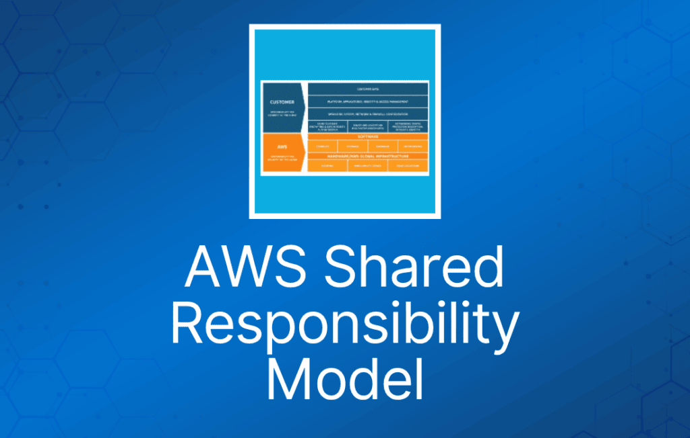
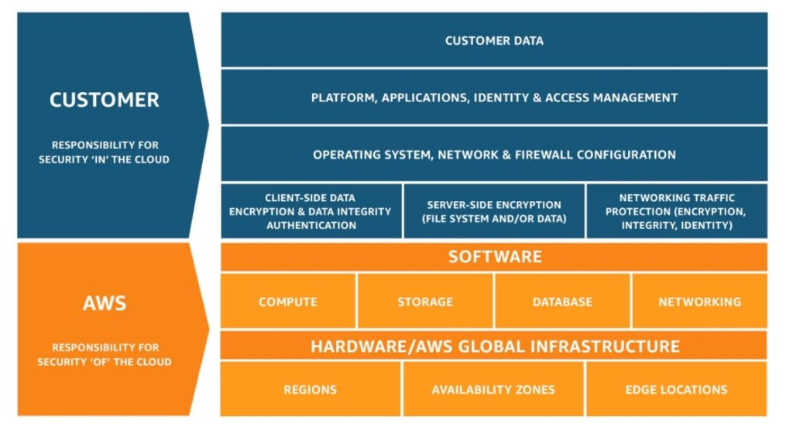

AWS 责任共担模型（shared responsibility model）界定了在安全与合规方面，你（作为 AWS 账户持有者/用户）和 AWS 各自承担的责任。
安全与合规是 AWS 与客户之间的共同责任。这种共担模型可以帮助客户减轻运维负担，因为 AWS 负责运行、管理和控制从宿主操作系统、虚拟化层一直到服务所在设施的物理安全等各个组件。
客户负责管理 guest 操作系统（包括更新和安全补丁）、其他相关应用软件，以及 AWS 提供的 security group 防火墙的配置。
AWS 负责"云本身的安全"（Security of the Cloud）。
- AWS 负责保护运行 AWS 云中所有服务的基础设施。
- 该基础设施由运行 AWS 云服务的硬件、软件、网络和设施组成。
客户负责"云内部的安全"（Security in the Cloud）。
- 对于 EC2，这包括网络层安全（NACL、security group）、操作系统补丁和更新、IAM 用户访问管理，以及客户端和服务器端的数据加密。
下图展示了 AWS 与客户之间的责任划分：

继承控制（Inherited Controls）—— 客户完全从 AWS 继承的控制。
- 物理与环境控制。
共享控制（Shared Controls）—— 同时适用于基础设施层和客户层、但分别处于不同上下文或视角的控制。
在 AWS 共享安全模型中，对于共享控制，AWS 提供基础设施层面的要求，而客户必须在使用 AWS 服务的过程中自行实施相应的控制。
共享控制的示例包括：
- 补丁管理（Patch Management） – AWS 负责修补和修复基础设施中的缺陷，但客户负责为自己的 guest OS 和应用打补丁。
- 配置管理（Configuration Management） – AWS 维护其基础设施设备的配置，但客户负责配置自己的 guest 操作系统、数据库和应用。
- 意识与培训（Awareness & Training） – AWS 培训 AWS 员工，但客户必须培训自己的员工。
客户特定控制（Customer Specific）—— 完全由客户负责的控制，取决于客户在 AWS 服务中部署的应用。
客户特定控制的示例包括：
- 服务与通信保护或区域安全（Zone Security），可能要求客户在特定安全环境内对数据进行路由或分区。